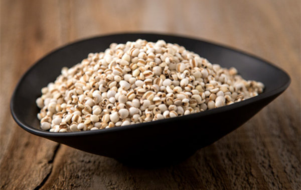

welcom to L & H & W
特产推荐



贵州兴仁被誉为中国薏仁米之乡，薏仁米是当地出名的特产。兴仁县位于贵州省黔西南州中部，境内为丘陵地区，地形起伏大，是典型的山区农业县。这样的地形地貌，加上没有任何工业园区的污染，没有喷洒任何的农药，种出来的粮食都可以说是独一无二的。薏仁米也成为当地山区农民的主要作物
-

山西忻州特产黑糯玉米
新疆特产阿尔泰山蜂巢蜜
台湾特产手工芋头酥
山东临沂农家自制花生酱
云南特产梁河皂角米

艾草青团又叫“清明果”、“艾米果”，是我的浙江老家独特的风味特产美食。青团采用艾草汁和米粉混合作皮，春笋丝、土猪肉、香干、酸菜、地衣等作馅。口味鲜美，爽糯而不腻，是不可多得的养生美食。

浙江杭州盛产莲藕，西湖藕粉采用杭州地区高品质莲藕纯天然制作，无任何添加成分，是小孩、孕妇、老人绝佳的养生食品，民间许多地方流行这样一句话“男不离酒，女不离藕”，指的就是人们对藕粉的钟爱，特别是对于女性朋友们，藕粉有美容养颜的功效。藕粉怎么冲呢?下面就为大家详细介绍浙江特产西湖藕粉。

纯正的牧民手工脱脂奶豆腐(脱脂：提取掉牛奶中的脂肪，也就是我们所说的黄油)，鲜牛奶精制而成营养非常的丰富，是普通奶制品的很多倍。其特点易吸收、口感细腻，酸甜溜溜的有点冰激淋的口感，酥软，酸甜，咬到口中滑滑的感觉。手工奶豆腐?完全采用鲜奶制作,是独具风味的内蒙古特产。
云南是我国甘蔗种植的主要省份之一，而云南大理得天独厚的地理环境造就了甘蔗的独特品质。云南特产大理红冰糖采用金沙江畔高糖、高产老品种甘蔗，沿用传统古法，甘蔗原汁小锅直接熬制，最大程度的保留了冰糖的营养价值，富含各种微量元素，具有很好的食疗和保健效果。